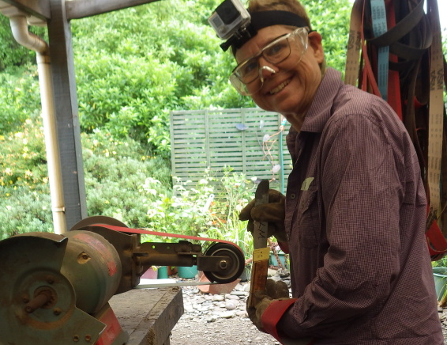
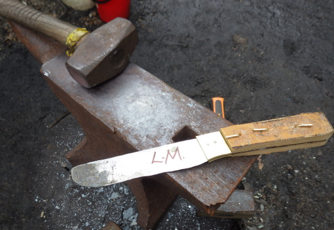
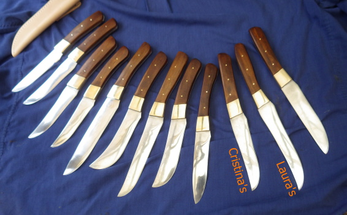

Cristina and I took a knife making class today at Barrytown Knifemaking. The class is put on by Steve and Robyn at their house in Barrytown. Steve is very funny and a good teacher. He kept the 10 of us in line and laughing all day.
The class starts with a safety briefing, and then we are given a large hunk of steel which we put in the fire until it is red hot. At that point, you take it out, put it on the anvil and start beating on it. It takes about three rounds of heating and beating, at which time you put it in for a final heat and then plunge the steel into a bucket of water to harden the blade. I can't say that the knife looks very promising at this point, but you just have to have faith.

After the blade is forged, we cut the blade to size and riveted on 2 brass pieces and 2 pieces of wood. Now the knife looks even less promising, but it is time to start shaping the handle and blade. We first sanded the handle and brass down to the size and shape of the steel, then put a resin sealer to fill any cracks. Then we drew the shape we wanted the knife to be directly on the wood and steel and started to sand. It only to a few minutes to get the shape and then it was time to start smoothing out the blades. We again used the belt sander and progressivly sanded with finer and finer sandpaper. Finally, we sanded by hand with even finer sandpaper and then polished the blade. After staining the handle, we were done and took a group photo with our knives. I think the final product is pretty impressive. I have to admit that Steve did some of the shaping and smoothing for us. I'm sure the knife wouldn't look so nice without all his expert help.

Barrytown knifemaking was started just over 11 years ago. Since then, they have helped people produce over 20,000 knives. Steve said "Don't mess with me, I have 20,000 friends and they all have knives". This was a very fun day. There were times when we had some downtime and there were plenty of things to do. We got to do a little axe and star throwing, shot bb guns, rode the giant swing, took the ponies for a run, and played with the parrot.